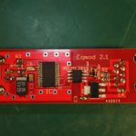
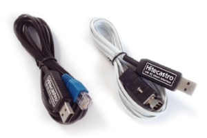
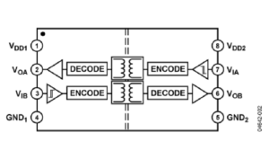
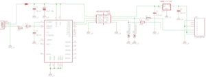
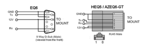
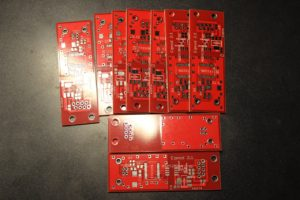

There are popular and quite cheap amateur telescope mounts from different vendors: Sky-Watcher, Celestron, etc.
Most of those mounts contain motors and some controller schematic. Users can control these devices in different ways. One way is to use the mount’s hand controller. Another way is to connect to the computer and use some software to control and guide the telescope. Such a connection can be made through special adapters (often called eqmod). This adapter is technically just some kind of serial converter, RS232 to UART (TTL) or USB to UART.
Here I’m describing a very reliable and simple adapter with galvanic isolation that I was developed and made.
So why don’t we use adapters provided by mount’s manufacturers or some cheap eqmod adapters?
The biggest problem with devices is a lack of galvanic isolation. Connecting the mount through these adapters makes a direct connection between the computer GND and the mount’s power supply. In case of failure with the power supply or disconnecting wires, your mount’s controller can blow up, and the computer port also can be damaged. I know a few cases.
{kind=link}
Another problem with such adapters is a component base. In most cases, a manufacturer uses a cheap converter IC like a pl2303 or ch340.
These chips are not perfect and may cause trouble on some operating systems.
This is the reason why I made my own eqmod adapter.
My device is based on the FT232 chip, which is a little bit expensive but more reliable. Galvanic isolation is based on ADUM12o1, which is a pretty good dual-channel digital isolators.
The ADuM1200/ADuM1201 chips are based on the Analog Devices iCoupler® technology – high-speed CMOS and monolithic transformer technologies. These isolation components provide outstanding
performance characteristics superior to alternatives, such as optocouplers.
Device schematic:
{kind=link}
The isolator chip’s left side is powered from the USB 5v line, and the right part is powered from the mount 12v source via AMS1117-5 voltage regulator.
{kind=link}
On this schematic, you can see some protection and filtering elements.
L1 is a ferrite bead, which I get from the old motherboard (you can find these beads around USB ports). This part is needed to reduce EMI noise from the FT232R, and associated circuitry radiated down the USB cable to the USB host.
Resistor R3 and R4 are matching elements that can improve stability when the long USB cable is used.
Mount IO lines also contain protection elements: R1, R2 resistors, and two Zener diodes. This circuit can protect from the possible voltage surges due to the inductance of the wires. This allows using a quite long wire between the adapter and mount.
All elements are mounted on a compact two-sided board.
{kind=link}
{kind=link}
{kind=link}
On the USB side, I used a type B socket, which is very common and reliable.
The Mount part is connected using an 8p8c (Ethernet) socket. This connection is used because most of the mounts have a similar socket, so you can use a regular Ethernet patch cord with any convenient length.
…most of the mounts, except Skywatcher EQ6.
This mount uses a DB9 (well known as a “comport”) connector and maybe a little confusing, but this is TTL UART. I don’t know why Sky-Watcher did this.
To connect this mount, you need to build a special cable with the schematic below.
To build this device, I’ve ordered 10 cheap boards with a swell red solder mask.
{kind=link}
Here is finished eqmod adapters:
{kind=link}
{kind=link}
{kind=link}
{kind=link}
Most of the made devices I sold for the local astronomy community and astronomy amateurs.
All users are happy 🙂
Of course, this device can be used not only with telescopes. This is a just good USB to UART adapter with isolation, so it can be used anywhere with any device (which can supply 6-12 volts).
Thanks for reading!
Super cool blog, and nice project! Are the gerber files freely available?
I could use a few of these boards myself!
Thanks!
Sure, here are Gerber files for this project. You can make your own boards.
Gerber
Hi. Your project is cool.
What used SMD Package Type?
Thanks.
Hello.
R5, R4, R3, R6, R7 – 0605
R2, R1 – 0805
C1, C2, C3, C4, C5 – 0805
D1, D2 – SMB
L1 – 0805
Thanks. I am currently solving the problem with interference when rotating the dome. That might help.
The last question. There are no R5, R6, R7 values in the schematic. What is their value?
Tomas
Sorry. I’m a little bit messed up. There are no R5, R6, and R7 on this board version.
You can check out the new better design: https://olegkutkov.me/2022/04/28/eqmod-adapter-for-telescopes-version-2/